Manual de Sistemas de Información Geográfica
![]()
Introducción
En este tutorial vamos a aprender a manejar información espacial, realizando diversas operaciones con Sistemas de Información Geográfica.
Vamos a trabajar con qGIS.
Flujo de Trabajo
- Crear proyecto
qGIS - Configurar sistema de referencia
- Cargar capas
- Realizar operaciones
- Crear mapa
- Guardar proyecto
- Abrir proyecto
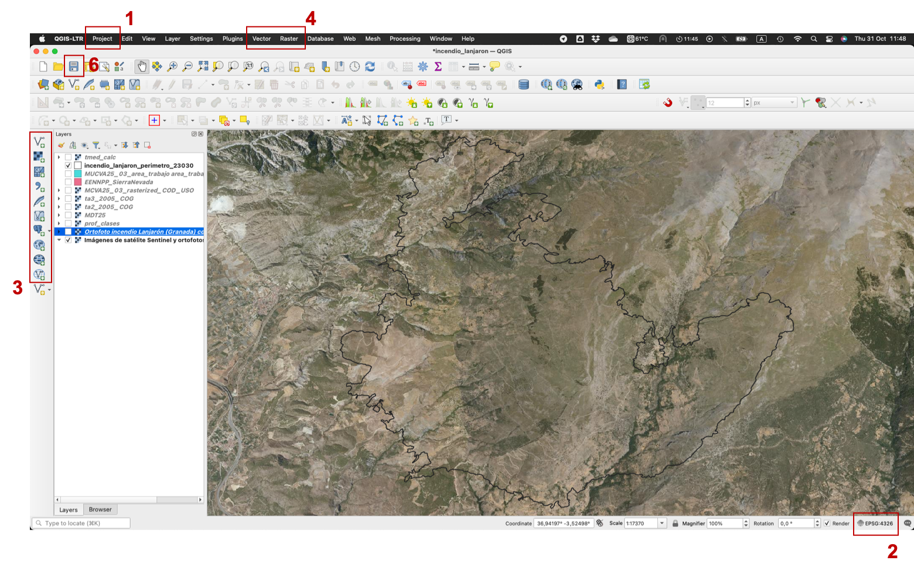
Crear un proyecto qGIS
Dentro de qGIS, haz clic en Project → New
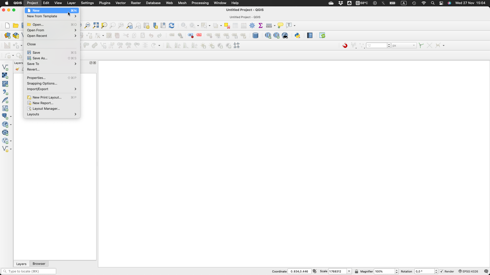
Configurar sistema de referencia
Al configurar el sistema de referencia del proyecto estamos diciéndole a qGIS que trabajaremos en este sistema. En este proyecto trabajaremos con el sistema de referencia EPSG 23030.
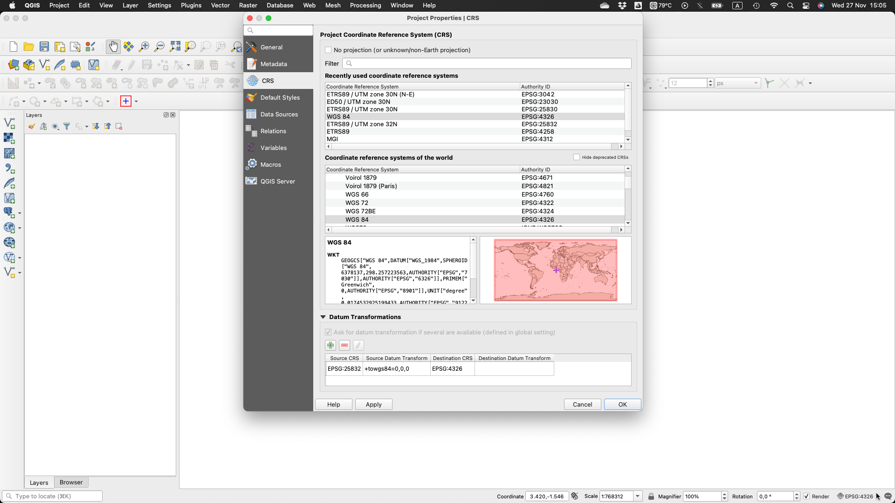
Cargar capas
Cargar capas vectoriales
La información vectorial puede almacenarse en distintos tipos de archivos. Algunos de los más comunes son los archivos shape y GeoPackage. La diferencia entre ellos es que en los archivos shape el formato de los archivos es privado, mientras que en los GeoPackage son datos abiertos. Además, los archivos shape en realidad se componen de un conjunto de archivos (.shp, .cpg, .dbf, .prj, .shx) que deben ir juntos y con el mismo nombre para ser leídos correctamente. Por su parte, los archivos GeoPackage contienen toda la información en un sólo archivo (.gpkg).
Cargaremos las capas vectoriales red_viaria.shp, incendio_lanjaron_perimetro_23030.shp y mucva_multi_23030.gpkg.
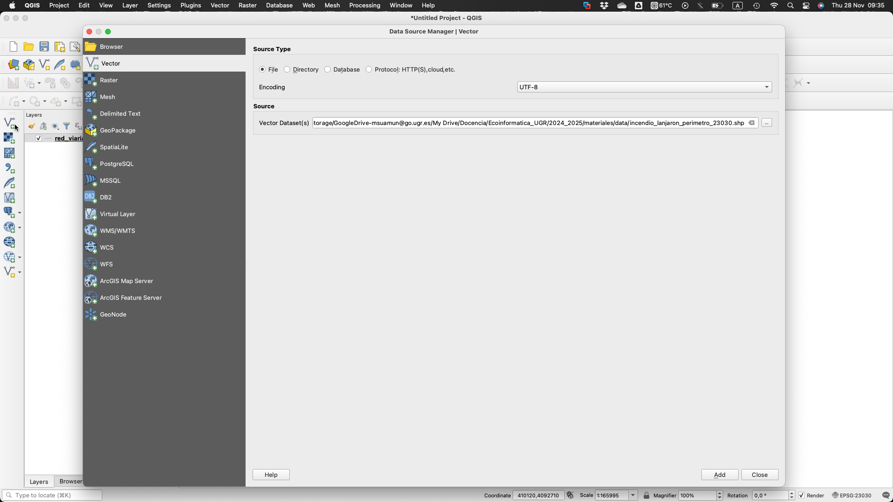
Estas capas contienen información sobre la red de carreteras, la zona afectada por el incendio y la vegetación existente en la zona. En las capas vectoriales la información está almacenada en los atributos de cada uno de los elementos de la capa. Para verlos: Botón derecho sobre la capa → Open Attribute Table
Cargar capas ráster
Ahora cargaremos una con información en rejilla (capa ráster). Los más habitual es que las capas ráster estén compuestas por celdas cuadradas, cada una de ellas con un valor numérico asignado. Pero también existen capas ráster con celdas no cuadradas (por ejemplo, hexagonales) y con información no numérica (por ejemplo, combinando archivos donde los valores numéricos de la capa se relacionan con una leyendas que aporta información adicional).
Como en el caso de los archivos vectoriales, para las capas ráster también existen distintos formatos (.asc, .tif o los algo antiguos .adf). En este caso cargaremos las capas correspondientes a la elevación (modelo_digital_elevaciones.asc) y profundidad de suelo (prof_suelos.tif).
Podéis encontrar una lista exhaustiva de formatos ráster en este (enlace)[http://www.gdal.org/formats_list.html] de la librería GDAL.
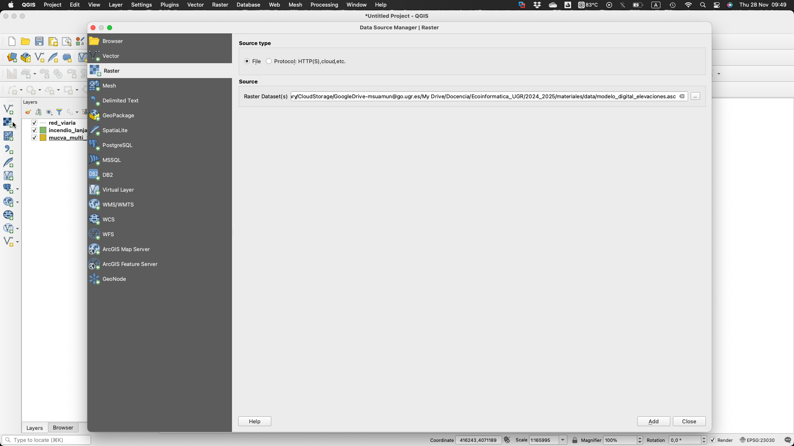
Las dos capas que hemos cargado tienen una diferencia fundamental, y es que una corresponde a una variable continua (la elevación), mientras que la otra representa una variable discreta (una clasificación de la profundidad del suelo en 4 clases). Esto es importante, ya que determina qué tipo de operaciones podremos realizar con ellas.
Cargar capas WMS
Las capas WMS (Web Map Service) son capas de información espacial que obtenemos de un servidor web que nos permite acceder a ellas y visualizarlas en nuestra aplicación SIG. Para acceder a ellas debemos facilitar a qGIS la URL en la que están alojadas.
En este proyecto pueden ser útiles las capas WMS con la ortofoto del PNOA de máxima actualidad (URL: http://www.ign.es/wms-inspire/pnoa-ma) o la ortofoto del incendio (URL: https://www.juntadeandalucia.es/medioambiente/mapwms/REDIAM_Ortofoto_Lanjaron_RGB_2005?).
Para crear la conexión al servidor: Add WMS/WMTS Layer… → New
Para cargar la capa: Add WMS/WMTS Layer… → Seleccionar capa → Connect → Seleccionar subcapa → Add
Existen multitud de fuentes de información espacial que ofrecen capas WMS. En el contexto de Andalucía una buena fuente es la Red de Información Ambiental de Andalucía (REDIAM), que además tiene un visor web que permite explorar las capas disponibles.
Modificar simbología de las capas
Al cargar una capa en qGIS el programa la representa considerando el tipo de capa que es. Sin embargo, podemos modificar esta simbología con multitud de opciones. Para ello accederemos a la opción Symbology haciendo doble click sobre la capa correspondiente.
Veremos cómo las opciones de simbología son diferentes según el tipo de capa:
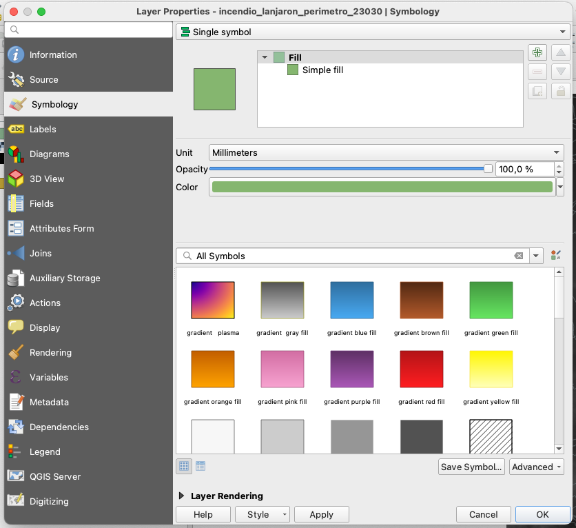
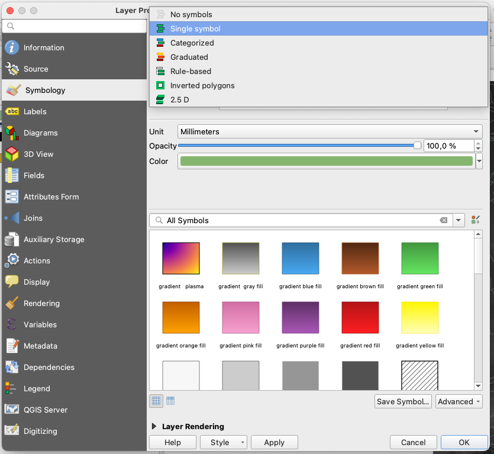
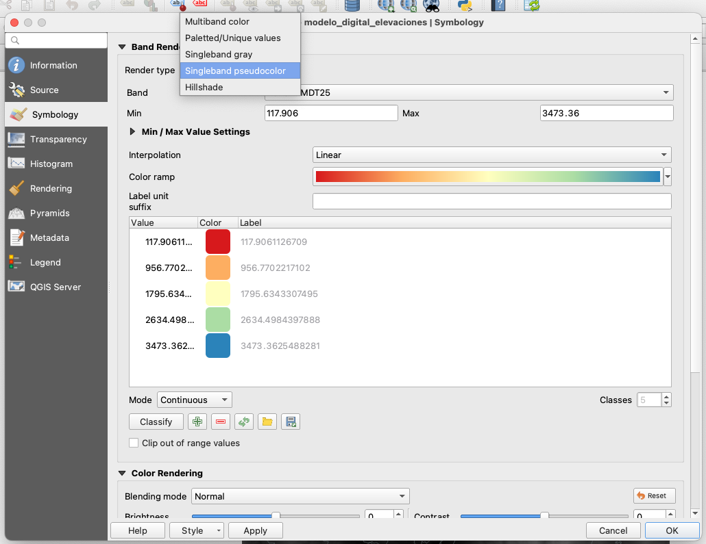
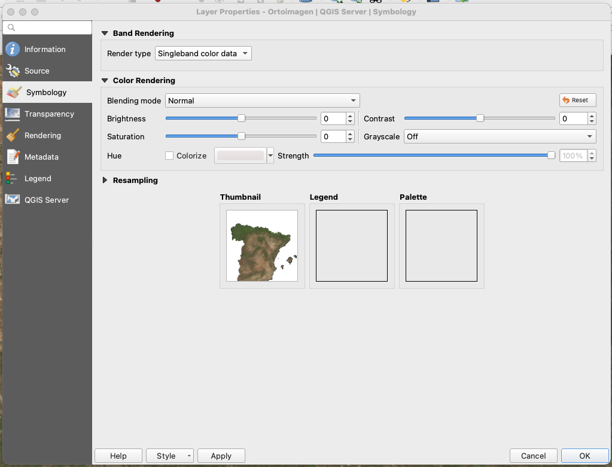
Crear capa vectorial (puntos)
qGIS nos permite cargar información a partir de archivos de texto:
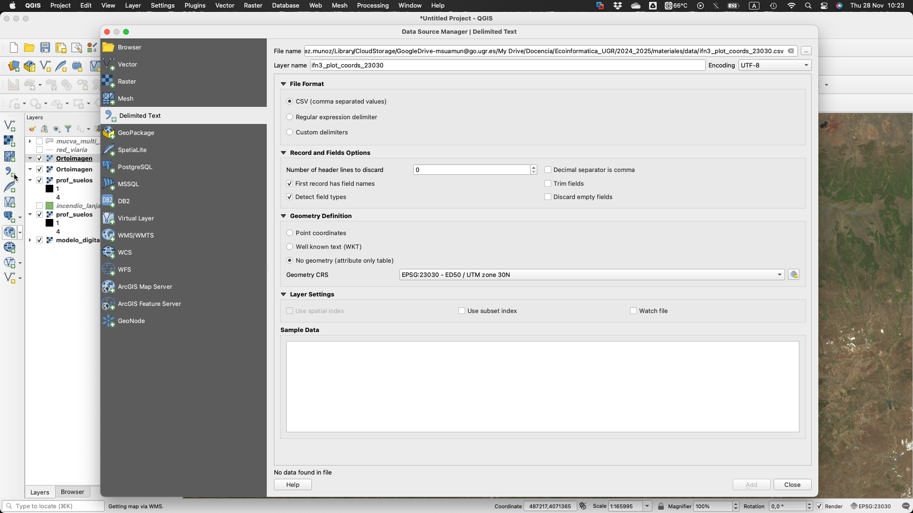
Esto es muy práctico en el caso habitual en el que tenemos una lista de puntos con sus coordenadas, como es el caso de la lista de parcelas del Inventario Forestal Nacional (ifn3_plot_coords_23030.csv), del que hablaremos más adelante.
Así, podemos crear una capa vectorial a partir de este tipo de archivos:
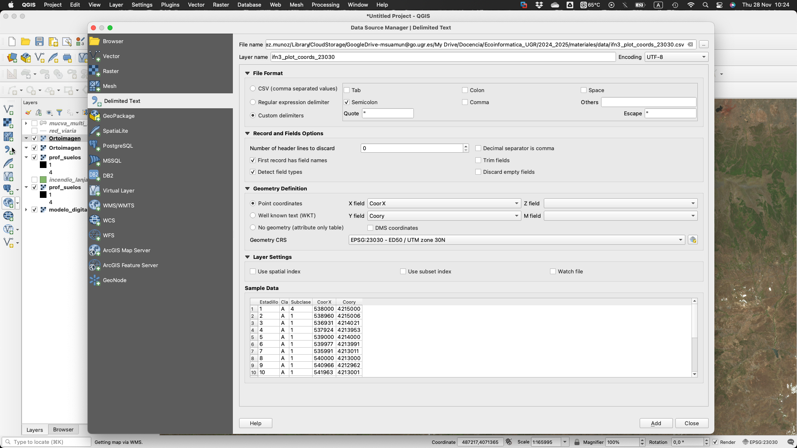
Esta capa, sin embargo, no existe fuera de nuestro proyecto de qGIS. Si queremos guardarla como tal necesitaremos exportarla: Export → Save Features As…
Crear capa vectorial (polígonos)
También podemos crear capas de manera manual. En este caso, nos será útil crear una capa con un polígono que contenga el área del incendio, a la que llamaremos area_trabajo_23030.shp. Para ello: New Shapefile Layer…
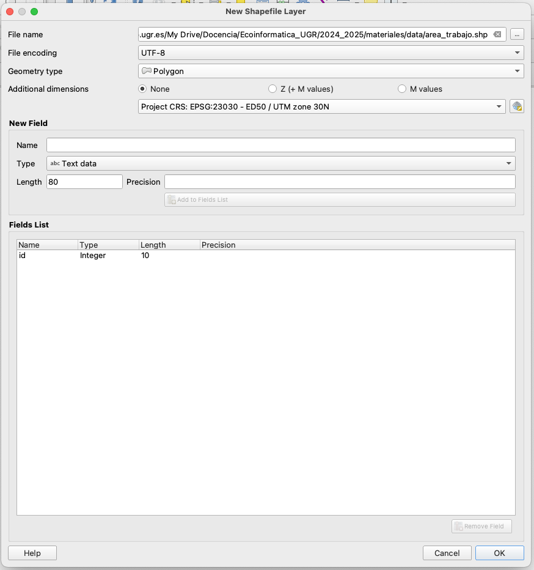
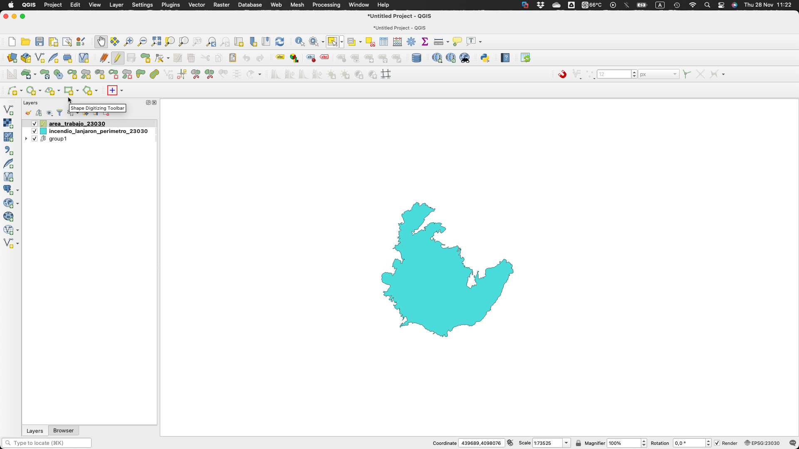
También podríamos crear capas de puntos y de líneas con las opciones correspondientes a este tipo de elementos.
Realizar operaciones
Una vez cargadas y creadas algunas de las capas con las que vamos trabajar podemos empezar a realizar operaciones con ellas. qGIS tiene algunas operaciones incorporadas de manera general a sus opciones. Además, para incorporar funcionalidades adicionales, qGIS ofrece una serie de plug-ins, está integrado con otros SIG como GDAL, GRASS o SAGA y permite realizar análisis con Python directamente desde la interfaz de qGIS. En este tutorial veremos algunas de estas funcionalidades, pero las opciones son casi infinitas, así que cuando quieras hacer algo y no sepas cómo, ¡pregunta! (a mí, a almas caritativas en foros sobre SIG y programación, a tu buscador de confianza, a tu IA favorita…).
Calcular geometrías
Una operación básica al trabajar con capas vectoriales es el cálculo de sus geometrías: Vector → Geometry Tools → Add Geometry Attributes…
El cálculo de geometrías sobre distinto tipo de capas vectoriales nos reporta distintos atributos, ¿por qué?
¿Cuál fue la superficie del incendio?
CUIDADO una vez calculadas las geometrías de una capa éstas se incorporan a los atributos de la capa y a partir de entonces qGIS se olvida de lo que son. Es decir, pasan a ser un atributo estátito de cada elemento y si realizamos operaciones con esa capa que arrastren esos atributos éstos no se actualizarán.
Calcular pendiente y aspecto
Por su parte, algunas operaciones básicas al trabajar con capas de elevación son el cálculo la pendiente (Raster → Analysis → Slope…) y el aspecto (Raster → Analysis → Aspect…), que aporta la integración de qGIS y GDAL.
Seleccionar elementos vectoriales
En algunas ocasiones nos interesa seleccionar un subconjunto de elementos de una capa vectorial (puntos dentro de un polígono, líneas o polígonos dentro de un polígono mayor…). Para podemos realizar una selección manual con distintas opciones (Select Feature(s), Select Features by Polygon, Select Features by Freehand, Select Features by Radius).
También podemos utilizar un polígono ya existente, como es el caso de nuestra area_trabajo_23030.shp: Vector → Geoprocessing Tools → Intersection… o Vector → Geoprocessing Tools → Clip…. ¿Cuál sería la diferencia?
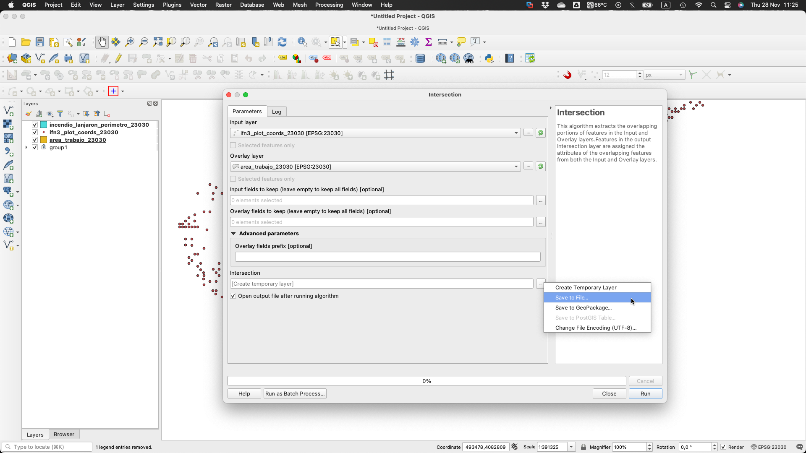
De la misma manera podríamos generar una capa con la red de carretera que se ha visto afectada por el incendio, y que constituyen las principales vías de acceso a la zona.
Buffer
Para distintos procesos nos puede resultar interesante definir unas franjas de cierta anchura a ambos lados de los caminos y carreteras (por ejemplo, para realizar actuaciones de eliminación de materia muerta para disminuir el riesgo de futuros incendios). Esto es lo que se conoce como “buffer”, y puede aplicarse sobre elementos lineales, pero también sobre puntos y polígonos (pensemos, por ejemplo, en la distancia a la que esperamos encontrar ciertas desde árboles individuales o parches de vegetación).
En este caso vamos a realizar un buffer sobre la red de carreteras afectadas por el fuego. Para ello primero necesitaremos recortar la capa de red viaria con el polígono del incendio (ver Intersection) y a continuación aplicar la herramienta buffer (Vector → Geoprocessing Tools → Buffer).
Con lo que hemos aprendido hasta ahora, imagina que tienes que diseñar una actuación sobre la zona afectada por el incendio. La actuación corresponde a la realización de (rozas)[https://diccionario.raing.es/es/lema/roza-1]. Queremos realizarlas sobre el regenerado pasados unos años tras el incendio, con el objetivo de reducir el riesgo de aparición nuevos incendios. ¿Sabrías decirme cuál será la superficie sobre la que actuar si queremos realizar rozas en toda la superficie que se encuentra a menos de 50 m de caminos?
Cálculos aritméticos con capas ráster
Las capas ráster tienen la ventaja de que al representar información numérica resulta muy sencillo calcular nuevas capas a partir de ellas aplicando operaciones aritméticas. Para ello qGIScuenta con la calculadora de rásters (Raster → Raster Calculator…) que nos permite combinar capas ráster mediante operaciones matemáticas.
Ejemplo de estas operaciones puede ser calcular una capa con la temperatura media de nuestra zona considerando las temperaturas máximas y mínimas (tmax_1971_2000_3042.tif, tmin_1971_2000_3042.tif):
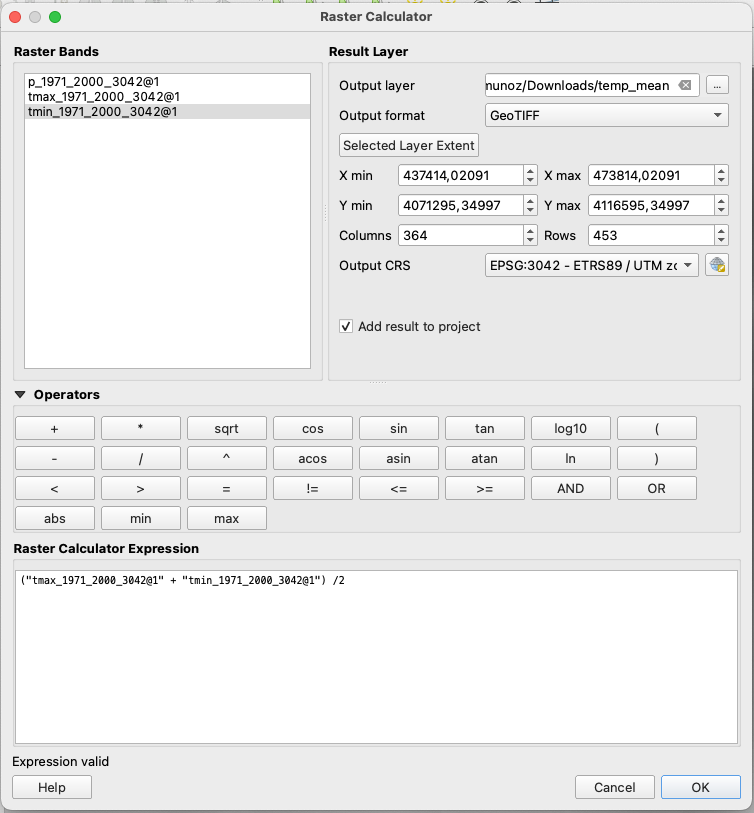
Nota: Si cargamos una capa que está en un sistema de referencia distinto al de nuestro proyecto, qGIS reproyectará esa capa al vuelo (a veces sin avisarnos) para visualizarla correctamente en el sistema de referencia del proyecto. Esto facilita la visualización, pero para realizar operaciones con distintas capas es más adecuado asegurarnos de que todas las capas estén en el mismo sistema antes de realizar operaciones sobre ellas (ver más abajo).
O todo tipo de índices, como por ejemplo el índice de aridez de De Martonne (M):
I_DM = Precipitación anual acumulada / (Temperatura media + 10)
Este índice nos da una idea de la aridez del clima de un territorio. Los valores por debajo de 10 indicarían un clima muy árido, mientras que valores entre 20-24 corresponderían al clima mediterráneo y por encima de 55 estaríamos hablando de climas muy húmedos.
En nuestro caso vemos cómo existe un gradiente muy acusado en los valores de este índice en el área que rodea al incendio. Para ver la distribución de los valores también podemos crear un histograma.
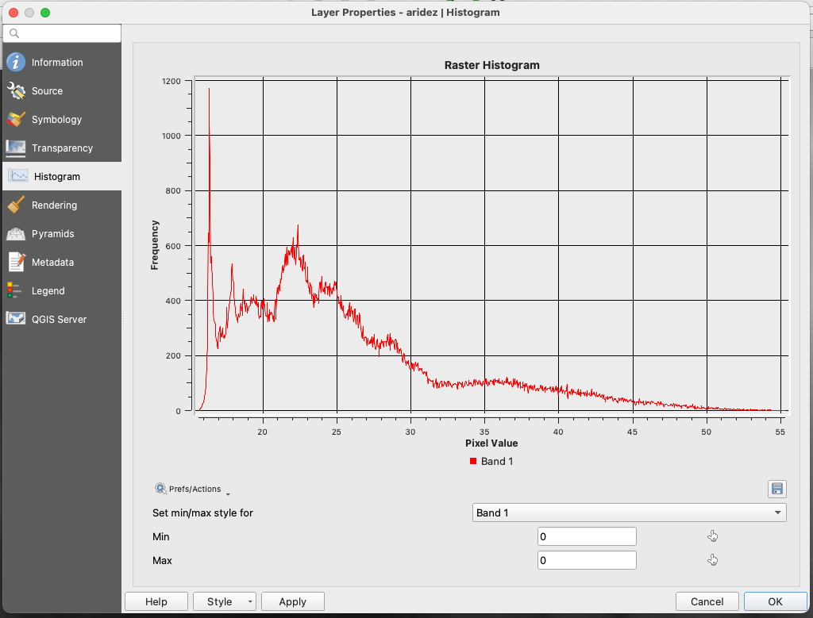
¿A qué puede deberse esta distribución?
Reproyectar capas
Como hemos comentado, cuando vamos a operar sobre capas que no están en el sistema de coordenadas en el que estamos trabajando es más adecuado reproyectarlas al sistema correspondiente, sobre todo si vamos a combinar capas que están en distintos sistemas. Para ello podemos reproyectar la capa con: Botón derecho sobre la capa → Export → Save As….
Aunque visualmente no veremos diferencia debido a la reproyección al vuelo que aplica qGIS, podemos ver la diferencia en la información de la capa Botón derecho sobre la capa → Information.
Recortar ráster
Cuando necesitamos recortar una capa ráster podemos hacerlo de varias maneras: podemos recortar una capa dando las coordenadas de los vértices del recuadro que queremos extraer o a partir de otra capa - vectorial o ráster - que tenga la extensión que nos interesa. La extensión es la superficie ocupada por una capa, que viene dada por las coordenadas de sus vértices (xmin, xmax, ymin, ymax). Para esto haremos: Raster → Extraction → Clip Raster by Extent
Ojo la extensión no tiene por qué corresponder con la superficie que visualizamos: un ráster puede tener celdas sin valor que computarán dentro de su extensión y la extensión de una capa vectorial se corresponderá con el recuadro formado por sus coordenadas máximas y mínimas, no por el mínimo polígono que contenga todos sus elementos.
Otra opción es utilizar una capa vectorial (de polígono) como máscara. En este caso sí extraeremos sólo la porción del ráster contenida dentro del polígono, y no la correspondiente a su extensión. Para esto haremos: Raster → Extraction → Clip Raster by Mask Layer
Crear máscara con capa ráster
El concepto de máscara es muy útil para distintos procesos con capas espaciales. En el paso anterior hemos visto cómo utilizar aplicar una máscara a partir de una capa vectorial. Pero en otros casos puede sernos útil tener a mano una máscara en formato ráster. Para crearla podemos utilizar la calculadora de rásters que ya utilizamos antes:
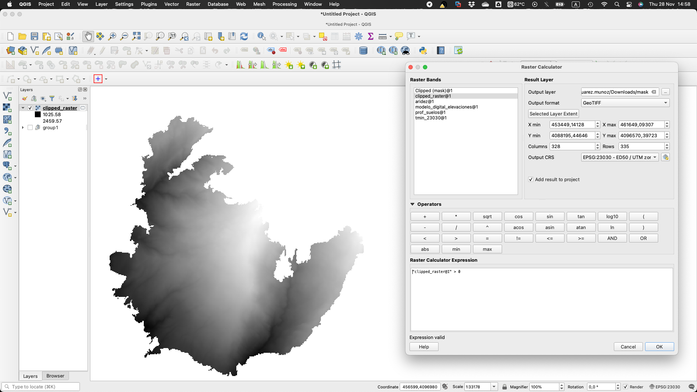
Así (por ejemplo, habría otras formas de hacerlo) obtenemos un ráster con valor 1 en las celdas con algún valor en la capa clipped_raster.
Comprobar validez de las geometrías
En ocasiones aparecen errores al intentar realizar operaciones con capas vectoriales, a menudo debido a pequeños fallos en la geometría de algún polígono. El error suele tener esta pinta:
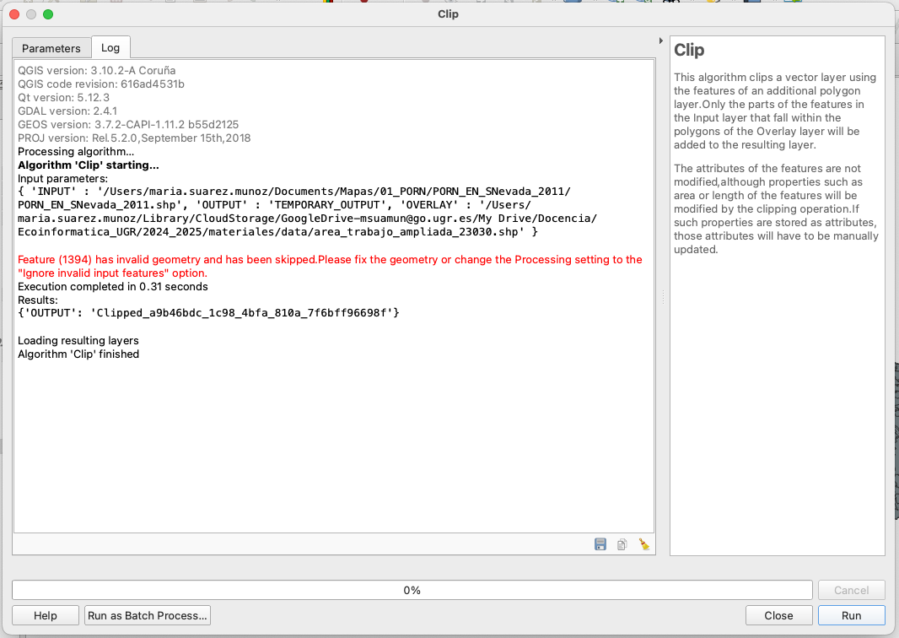
Encontrar el error puede ser complicado cuando se trata de capas con muchos polígonos. Para facilitarlo podemos comprovar la validez de la geometría de una capa (Vector → Geometry Tools → Check Validity…), obteniendo capas resultantes que identifican dónde está el problema:
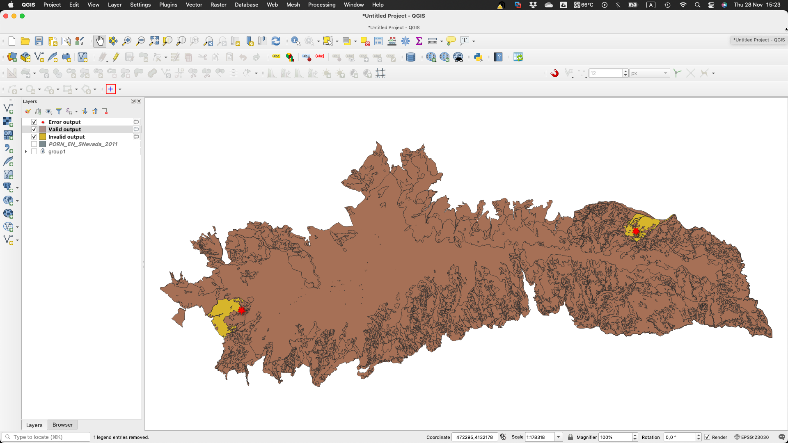
La causa de los errores puede ser diversa y, por tanto, la solución puede depender en cada caso, pero al menos ya tenemos ubicado el problema ;)
Descargar info de la REDIAM - HASTA AQUÍ
A menudo necesitamos capas de información que no podemos generar nosotros mismos, sino que las des
https://portalrediam.cica.es/descargas Al menos: incidencia, temperaturas y precipitaciones
Vincular información a una capa
Archivo texto + archivo vectorial (Joins) Pre-intro a BBDD
Alinear capas ráster
Explicar problemas de alineamiento - qGIS no lo menciona!
Rasterizar
Poligonizar
Difference / Dissolve / Union
Crear mapa
Para crear un mapa exportable a pdf u otro formato primero necesitaremos crear un diseño (Project → New Print Layout…). Una vez creado accedemos a él y podemos empezar a añadir elementos:
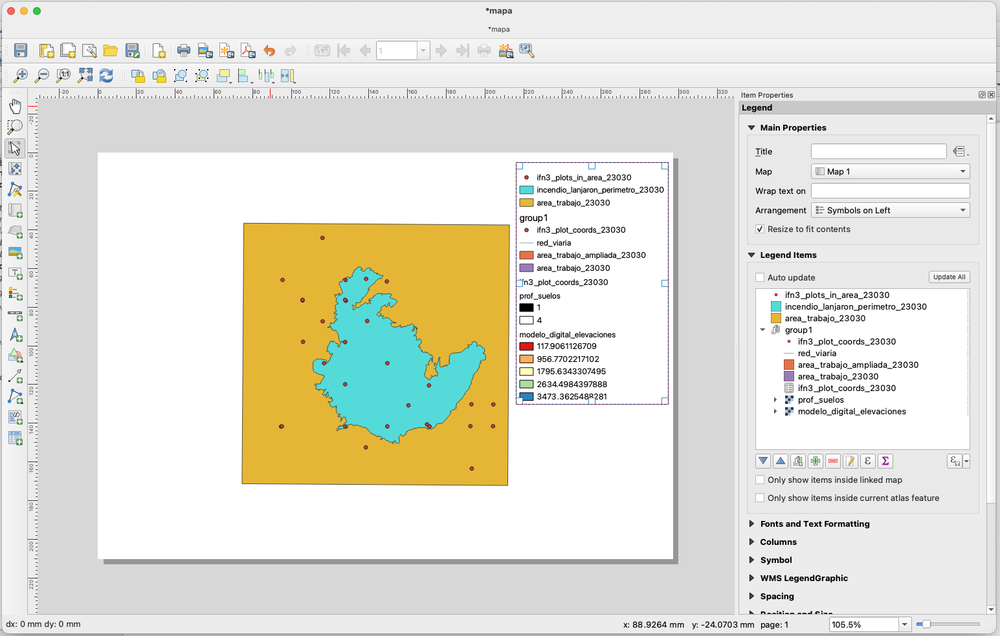
Guardar proyecto
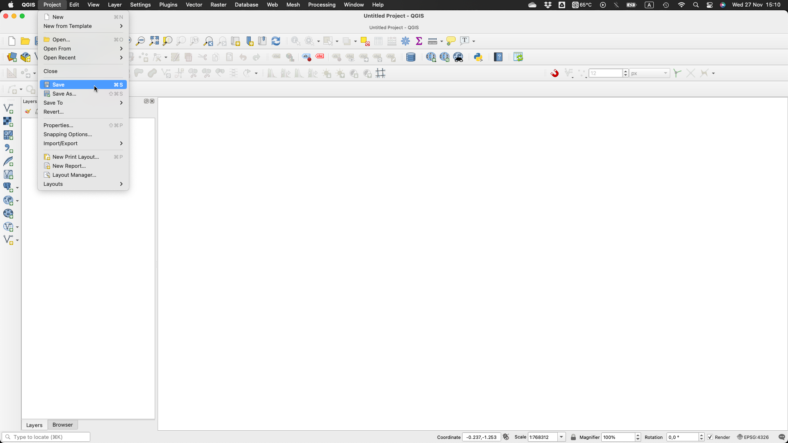
Abrir proyecto
- error de capas
Capas necesarias para la práctica con R
Máscara - hecho en ### Crear máscara con capa ráster Pendiente - hecho en ### Calcular pendiente y aspecto Aspecto - hecho en ### Calcular pendiente y aspecto Incidencia - descargar (### Descargar info de la REDIAM) y recortar (### Recortar ráster) Aridez - hecho en ### Cálculos aritméticos con capas ráster Temperaturas - descargar (### Descargar info de la REDIAM) Precipitaciones - descargar (### Descargar info de la REDIAM) Algo de vegetación - Calcular superficie quemada de distintas coberturas (cargar mapa de vegetación, recortar, …)